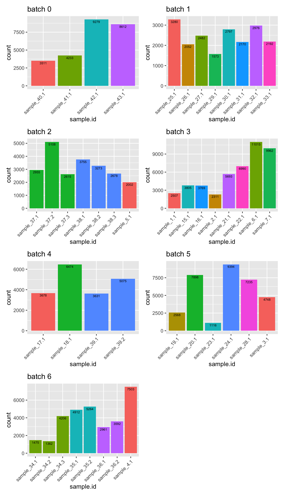

Last updated: 2024-02-27
Checks: 7 0
Knit directory: paed-inflammation-CITEseq/
This reproducible R Markdown analysis was created with workflowr (version 1.7.1). The Checks tab describes the reproducibility checks that were applied when the results were created. The Past versions tab lists the development history.
Great! Since the R Markdown file has been committed to the Git repository, you know the exact version of the code that produced these results.
Great job! The global environment was empty. Objects defined in the global environment can affect the analysis in your R Markdown file in unknown ways. For reproduciblity it’s best to always run the code in an empty environment.
The command set.seed(20240216) was run prior to running
the code in the R Markdown file. Setting a seed ensures that any results
that rely on randomness, e.g. subsampling or permutations, are
reproducible.
Great job! Recording the operating system, R version, and package versions is critical for reproducibility.
Nice! There were no cached chunks for this analysis, so you can be confident that you successfully produced the results during this run.
Great job! Using relative paths to the files within your workflowr project makes it easier to run your code on other machines.
Great! You are using Git for version control. Tracking code development and connecting the code version to the results is critical for reproducibility.
The results in this page were generated with repository version 2176c1e. See the Past versions tab to see a history of the changes made to the R Markdown and HTML files.
Note that you need to be careful to ensure that all relevant files for
the analysis have been committed to Git prior to generating the results
(you can use wflow_publish or
wflow_git_commit). workflowr only checks the R Markdown
file, but you know if there are other scripts or data files that it
depends on. Below is the status of the Git repository when the results
were generated:
Ignored files:
Ignored: .Rhistory
Ignored: .Rproj.user/
Untracked files:
Untracked: .DS_Store
Untracked: analysis/05.0_remove_ambient.Rmd
Untracked: analysis/06.0_azimuth_annotation.Rmd
Untracked: analysis/06.1_azimuth_annotation_decontx.Rmd
Untracked: code/dropletutils.R
Untracked: code/utility.R
Untracked: data/.DS_Store
Untracked: data/C133_Neeland_batch0/
Untracked: data/C133_Neeland_batch1/
Untracked: data/C133_Neeland_batch2/
Untracked: data/C133_Neeland_batch3/
Untracked: data/C133_Neeland_batch4/
Untracked: data/C133_Neeland_batch5/
Untracked: data/C133_Neeland_batch6/
Untracked: data/CZI_samples_design_with_micro.xlsx
Untracked: renv.lock
Untracked: renv/
Unstaged changes:
Modified: .Rprofile
Modified: .gitignore
Modified: analysis/01.0_preprocess_batch0.Rmd
Modified: analysis/01.1_preprocess_batch1.Rmd
Note that any generated files, e.g. HTML, png, CSS, etc., are not included in this status report because it is ok for generated content to have uncommitted changes.
These are the previous versions of the repository in which changes were
made to the R Markdown (analysis/04.0_filter_doublets.Rmd)
and HTML (docs/04.0_filter_doublets.html) files. If you’ve
configured a remote Git repository (see ?wflow_git_remote),
click on the hyperlinks in the table below to view the files as they
were in that past version.
| File | Version | Author | Date | Message |
|---|---|---|---|---|
| html | c2985bb | Jovana Maksimovic | 2024-02-27 | Build site. |
| Rmd | 59f1b28 | Jovana Maksimovic | 2024-02-27 | wflow_publish("analysis/04.0_filter_doublets.Rmd") |
suppressPackageStartupMessages({
library(BiocStyle)
library(tidyverse)
library(here)
library(glue)
library(patchwork)
library(paletteer)
library(readxl)
library(ggupset)
library(stringr)
})files <- list.files(here("data",
paste0("C133_Neeland_batch", 0:6),
"data",
"SCEs"),
pattern = "doublets_called",
full.names = TRUE)
sceLst <- sapply(files, function(fn){
readRDS(file = fn)
})
sceLst$`/Users/maksimovicjovana/Work/Projects/MCRI/melanie.neeland/paed-inflammation-CITEseq/data/C133_Neeland_batch0/data/SCEs/C133_Neeland_batch0.doublets_called.SCE.rds`
class: SingleCellExperiment
dim: 33538 26939
metadata(0):
assays(1): counts
rownames(33538): ENSG00000243485 ENSG00000237613 ... ENSG00000277475
ENSG00000268674
rowData names(20): ID Symbol ... is_mito is_pseudogene
colnames(26939): 1_AAACCCAAGCTAGTTC-1 1_AAACCCACAGTCGCTG-1 ...
4_TTTGTTGTCTAGTACG-1 4_TTTGTTGTCTCGAACA-1
colData names(25): Barcode Capture ... scDblFinder.cxds_score batch
reducedDimNames(0):
mainExpName: NULL
altExpNames(0):
$`/Users/maksimovicjovana/Work/Projects/MCRI/melanie.neeland/paed-inflammation-CITEseq/data/C133_Neeland_batch1/data/SCEs/C133_Neeland_batch1.doublets_called.SCE.rds`
class: SingleCellExperiment
dim: 36601 21970
metadata(0):
assays(1): counts
rownames(36601): ENSG00000243485 ENSG00000237613 ... ENSG00000278817
ENSG00000277196
rowData names(20): ID Symbol ... is_mito is_pseudogene
colnames(21970): 1_AAACCCACACTTCCTG-1 1_AAACCCACAGACAAAT-1 ...
2_TTTGTTGTCATTGGTG-1 2_TTTGTTGTCGATGGAG-1
colData names(32): Barcode Capture ... scDblFinder.cxds_score batch
reducedDimNames(0):
mainExpName: NULL
altExpNames(2): HTO ADT
$`/Users/maksimovicjovana/Work/Projects/MCRI/melanie.neeland/paed-inflammation-CITEseq/data/C133_Neeland_batch2/data/SCEs/C133_Neeland_batch2.doublets_called.SCE.rds`
class: SingleCellExperiment
dim: 36601 45711
metadata(0):
assays(1): counts
rownames(36601): ENSG00000243485 ENSG00000237613 ... ENSG00000278817
ENSG00000277196
rowData names(20): ID Symbol ... is_mito is_pseudogene
colnames(45711): 1_AAACCCAAGACCTGGA-1 1_AAACCCAAGACTGTTC-1 ...
2_TTTGTTGTCTCATGGA-1 2_TTTGTTGTCTCCAAGA-1
colData names(32): Barcode Capture ... scDblFinder.cxds_score batch
reducedDimNames(0):
mainExpName: NULL
altExpNames(2): HTO ADT
$`/Users/maksimovicjovana/Work/Projects/MCRI/melanie.neeland/paed-inflammation-CITEseq/data/C133_Neeland_batch3/data/SCEs/C133_Neeland_batch3.doublets_called.SCE.rds`
class: SingleCellExperiment
dim: 36601 58038
metadata(0):
assays(1): counts
rownames(36601): ENSG00000243485 ENSG00000237613 ... ENSG00000278817
ENSG00000277196
rowData names(20): ID Symbol ... is_mito is_pseudogene
colnames(58038): 1_AAACCCAAGCAGCACA-1 1_AAACCCAAGCATCTTG-1 ...
2_TTTGTTGTCTAGGCCG-1 2_TTTGTTGTCTCGGCTT-1
colData names(32): Barcode Capture ... scDblFinder.cxds_score batch
reducedDimNames(0):
mainExpName: NULL
altExpNames(2): HTO ADT
$`/Users/maksimovicjovana/Work/Projects/MCRI/melanie.neeland/paed-inflammation-CITEseq/data/C133_Neeland_batch4/data/SCEs/C133_Neeland_batch4.doublets_called.SCE.rds`
class: SingleCellExperiment
dim: 36601 45760
metadata(0):
assays(1): counts
rownames(36601): ENSG00000243485 ENSG00000237613 ... ENSG00000278817
ENSG00000277196
rowData names(20): ID Symbol ... is_mito is_pseudogene
colnames(45760): 1_AAACCCAAGCGTTAGG-1 1_AAACCCAAGGATTTGA-1 ...
2_TTTGTTGTCGACGATT-1 2_TTTGTTGTCTAGGCCG-1
colData names(32): Barcode Capture ... scDblFinder.cxds_score batch
reducedDimNames(0):
mainExpName: NULL
altExpNames(2): HTO ADT
$`/Users/maksimovicjovana/Work/Projects/MCRI/melanie.neeland/paed-inflammation-CITEseq/data/C133_Neeland_batch5/data/SCEs/C133_Neeland_batch5.doublets_called.SCE.rds`
class: SingleCellExperiment
dim: 36601 44715
metadata(0):
assays(1): counts
rownames(36601): ENSG00000243485 ENSG00000237613 ... ENSG00000278817
ENSG00000277196
rowData names(20): ID Symbol ... is_mito is_pseudogene
colnames(44715): 1_AAACCCAAGAAGATCT-1 1_AAACCCAAGATGCAGC-1 ...
2_TTTGTTGTCGGATTAC-1 2_TTTGTTGTCTGAGAGG-1
colData names(32): Barcode Capture ... scDblFinder.cxds_score batch
reducedDimNames(0):
mainExpName: NULL
altExpNames(2): HTO ADT
$`/Users/maksimovicjovana/Work/Projects/MCRI/melanie.neeland/paed-inflammation-CITEseq/data/C133_Neeland_batch6/data/SCEs/C133_Neeland_batch6.doublets_called.SCE.rds`
class: SingleCellExperiment
dim: 36601 46485
metadata(0):
assays(1): counts
rownames(36601): ENSG00000243485 ENSG00000237613 ... ENSG00000278817
ENSG00000277196
rowData names(20): ID Symbol ... is_mito is_pseudogene
colnames(46485): 1_AAACCCAAGAAGCGCT-1 1_AAACCCAAGACTCATC-1 ...
2_TTTGTTGTCGAGAATA-1 2_TTTGTTGTCTACTGAG-1
colData names(32): Barcode Capture ... scDblFinder.cxds_score batch
reducedDimNames(0):
mainExpName: NULL
altExpNames(2): HTO ADText_metadata_df <- read_excel(
here("data/CZI_samples_design_with_micro.xlsx"),
col_types =
c("text", "numeric", "text", "text", "text", "numeric", "numeric", "text",
"numeric", "text", "numeric", "numeric", "numeric", "numeric",
"text", "text", "text")) %>%
mutate(HASHTAG = paste0("Human_HTO_", HASHTAG)) %>%
mutate(sample.id = ave(Donor_ID, Donor_ID,
FUN = function(i) paste0("sample_", i, '.', seq_along(i)))) %>%
dplyr::rename(Batch = BATCH,
Donor = Donor_ID,
Hashtag = HASHTAG,
arest.id = AREST_ID) %>%
mutate(Donor = as.factor(Donor))
knitr::kable(ext_metadata_df)| arest.id | Donor | Disease | Treatment | Severity | Experiment | Age | Sex | Batch | Hashtag | Micobiology_done | Bacteria_detected | Virus_detected | Fungi_detected | Bacteria_type | Virus_type | Fungi_type | sample.id |
|---|---|---|---|---|---|---|---|---|---|---|---|---|---|---|---|---|---|
| M1C141 | 25 | CF | untreated | Severe | 2 | 4.9100000 | F | 1 | Human_HTO_3 | 1 | 1 | 0 | 1 | Haemophilus parainfluenzae | NA | Aspergillus fumigatus | sample_25.1 |
| M1C156 | 26 | CF | untreated | mild | 2 | 5.0493151 | M | 1 | Human_HTO_6 | 1 | 1 | 0 | 0 | S. aureus | NA | NA | sample_26.1 |
| M1C130 | 27 | CF | treated (ivacaftor) | mild | 2 | 4.9178082 | M | 1 | Human_HTO_7 | 1 | 0 | 0 | 0 | NA | NA | NA | sample_27.1 |
| M1C122 | 29 | CF | untreated | severe | 2 | 5.9890411 | F | 1 | Human_HTO_1 | 1 | 1 | 1 | 0 | S. aureus, Stenotrophomonas, E.coli, Haemophilus influenzae | Parainfluenza virus 2 | NA | sample_29.1 |
| M1C118 | 30 | CF | untreated | severe | 2 | 6.0164384 | F | 1 | Human_HTO_2 | 1 | 1 | 0 | 0 | Mycobacterium Avium, Haemophilus parainfluenzae | NA | NA | sample_30.1 |
| M1C125 | 31 | CF | untreated | mild | 2 | 5.8904110 | F | 1 | Human_HTO_4 | 1 | 0 | 0 | 0 | NA | NA | NA | sample_31.1 |
| M1C1265 | 32 | CF | untreated | mild | 2 | 5.9260274 | F | 1 | Human_HTO_5 | 1 | 0 | 0 | 0 | NA | NA | NA | sample_32.1 |
| M1C129 | 33 | CF | treated (ivacaftor) | severe | 2 | 5.9506849 | M | 1 | Human_HTO_8 | 1 | 1 | 0 | 0 | S. aureus, Haemophilus parainfluenzae, Stenotrophomonas | NA | NA | sample_33.1 |
| M1N050 | 5 | Healthy | Healthy | Healthy | 3 | 8.3972603 | F | 2 | Human_HTO_7 | 0 | NA | NA | NA | NA | NA | NA | sample_5.1 |
| M1N057 | 10 | Wheeze | Wheeze | Wheeze | 3 | 3.6657534 | M | 2 | Human_HTO_6 | 1 | 1 | 0 | 0 | Haemophilus influenzae | NA | NA | sample_10.1 |
| M1C161.1 | 37 | CF | untreated | mild | 3 | 2.9479452 | F | 2 | Human_HTO_9 | 1 | 1 | 0 | 0 | Haemophilus influenzae | NA | NA | sample_37.1 |
| M1C161.2 | 37 | CF | treated (orkambi) | mild | 3 | 4.5726027 | F | 2 | Human_HTO_10 | 1 | 1 | 0 | 0 | Haemphilus parainfluenzae, Haemophilus Parahemolyticus | NA | NA | sample_37.2 |
| M1C161.3 | 37 | CF | treated (orkambi) | mild | 3 | 4.9178082 | F | 2 | Human_HTO_12 | 1 | 1 | 1 | 0 | S. aureus, Haemophilus parainfluenza | Rhinovirus, Enterovirus | NA | sample_37.3 |
| M1C159.1 | 38 | CF | treated (ivacaftor) | mild | 3 | 2.9698630 | M | 2 | Human_HTO_13 | 1 | 1 | 0 | 0 | Haemophilus parainfluenzae, Haemophilus parahaemolyticus, Haemophilus haemolyticus | NA | NA | sample_38.1 |
| M1C159.2 | 38 | CF | treated (ivacaftor) | mild | 3 | 4.0575342 | M | 2 | Human_HTO_14 | 1 | 1 | 1 | 0 | Haemophilus influenzae | Enterovirus, Human metapneumovirus | NA | sample_38.2 |
| M1C159.3 | 38 | CF | treated (ivacaftor) | mild | 3 | 5.0931507 | M | 2 | Human_HTO_15 | 1 | 1 | 0 | 0 | Haemophilus Haemolyticus, Haemophilus parainfluenza | NA | NA | sample_38.3 |
| M1N047 | 1 | Healthy | Healthy | Healthy | 3 | 0.8356164 | M | 3 | Human_HTO_6 | 0 | NA | NA | NA | NA | NA | NA | sample_1.1 |
| M1N063 | 2 | Healthy | Healthy | Healthy | 3 | 1.1068493 | M | 3 | Human_HTO_7 | 1 | 1 | 0 | 0 | moraxella catarrhalis | NA | NA | sample_2.1 |
| M1N048 | 6 | Healthy | Healthy | Healthy | 3 | 5.3534247 | M | 3 | Human_HTO_14 | 1 | 1 | 0 | 0 | S. aureus | NA | NA | sample_6.1 |
| M1N062 | 7 | Healthy | Healthy | Healthy | 3 | 4.7095890 | F | 3 | Human_HTO_15 | 1 | 0 | 0 | 0 | NA | NA | NA | sample_7.1 |
| M1C178 | 15 | CF | untreated | mild | 3 | 0.9369863 | M | 3 | Human_HTO_12 | 1 | 1 | 0 | 1 | Enterobacter cloacae, Haemophilus parainfluenzae | NA | Candida | sample_15.1 |
| M1C179 | 16 | CF | untreated | mild | 3 | 0.9232877 | F | 3 | Human_HTO_13 | 1 | 0 | 0 | 1 | NA | NA | Aspergillus fumigatus | sample_16.1 |
| M1C168 | 21 | CF | untreated | severe | 3 | 2.9780822 | F | 3 | Human_HTO_9 | 1 | 1 | 0 | 0 | Haemophilus influenzae, MRSA | NA | NA | sample_21.1 |
| M1C164 | 22 | CF | treated (ivacaftor) | mild | 3 | 3.0301370 | M | 3 | Human_HTO_10 | 1 | 1 | 0 | 0 | S. aureus, Haemophilus haemolyticus | NA | NA | sample_22.1 |
| M1N053 | 8 | Wheeze | Wheeze | Wheeze | 3 | 1.0438356 | M | 4 | Human_HTO_7 | 1 | 1 | 1 | 0 | Haemophilus influenzae, Haemophilus parainfluenzae | RSV | NA | sample_8.1 |
| M1N061 | 9 | Wheeze | Wheeze | Wheeze | 3 | 0.9698630 | M | 4 | Human_HTO_9 | 1 | 0 | 1 | 0 | NA | Rhinovirus, Adenovirus | NA | sample_9.1 |
| M1N059 | 12 | CSLD | CSLD | CSLD | 3 | 3.8739726 | F | 4 | Human_HTO_6 | 1 | 0 | 0 | 0 | NA | NA | NA | sample_12.1 |
| M1N056 | 13 | CSLD | CSLD | CSLD | 3 | 5.9287671 | F | 4 | Human_HTO_10 | 1 | 1 | 0 | 1 | S. aureus, Haemophilus parainfluenzae | NA | Aspergillus fumigatus | sample_13.1 |
| M1C181 | 17 | CF | untreated | mild | 3 | 0.9698630 | F | 4 | Human_HTO_12 | 1 | 1 | 1 | 0 | Burkholderia cenocepacia | Parainfluenza virus 3, RSV | NA | sample_17.1 |
| M1C193 | 18 | CF | untreated | mild | 3 | 1.1041096 | M | 4 | Human_HTO_13 | 1 | 1 | 1 | 0 | Klebsiella Aerogens, Haemophilus parainfluenzae | Rhnovirus, Enterovirus | NA | sample_18.1 |
| M1C152.1 | 39 | CF | untreated | mild | 3 | 3.9260274 | F | 4 | Human_HTO_14 | 1 | 1 | 0 | 0 | Streptococcus pneumoniae, Moraxella catarrhalis , Haemophilus parainfluenzae, Haemophilus influenzae | NA | NA | sample_39.1 |
| M1C152.2 | 39 | CF | treated (orkambi) | mild | 3 | 6.1890411 | F | 4 | Human_HTO_15 | 1 | 1 | 1 | 0 | Streptococcus pneumoniae, Haemophilus influenzae | Rhinovirus | NA | sample_39.2 |
| M1N055 | 3 | Healthy | Healthy | Healthy | 3 | 1.0958904 | M | 5 | Human_HTO_6 | 1 | 1 | 1 | 0 | Haemophilus influenzae, Moraxella catarrhalis | Rhinovirus | NA | sample_3.1 |
| M1N065 | 11 | Wheeze | Wheeze | Wheeze | 3 | 5.9013699 | M | 5 | Human_HTO_12 | 1 | 0 | 0 | 0 | NA | NA | NA | sample_11.1 |
| M1N054 | 14 | CSLD | CSLD | CSLD | 3 | 7.4602740 | F | 5 | Human_HTO_7 | 1 | 1 | 0 | 0 | Haemophilus influenzae | NA | NA | sample_14.1 |
| M1C177 | 19 | CF | untreated | mild | 3 | 0.9506849 | F | 5 | Human_HTO_9 | 1 | 0 | 0 | 0 | NA | NA | NA | sample_19.1 |
| M1C188 | 20 | CF | untreated | severe | 3 | 1.4739726 | M | 5 | Human_HTO_10 | 1 | 1 | 0 | 0 | Klebsiella Oxytoca, Staph Aureus (Methicillin Resistant) | NA | NA | sample_20.1 |
| M1C158 | 23 | CF | untreated | severe | 3 | 3.9232877 | F | 5 | Human_HTO_13 | 1 | 1 | 1 | 0 | MRSA | Influenza A | NA | sample_23.1 |
| M1C155 | 24 | CF | treated (ivacaftor) | mild | 3 | 5.2356164 | M | 5 | Human_HTO_14 | 1 | 0 | 0 | 0 | NA | NA | NA | sample_24.1 |
| M1C123 | 28 | CF | untreated | mild | 3 | 5.9753425 | F | 5 | Human_HTO_15 | 1 | 1 | 1 | NA | Pseudomonas aeruginosa | Influenza A | NA | sample_28.1 |
| M1N051 | 4 | Healthy | Healthy | Healthy | 3 | 1.2246575 | M | 6 | Human_HTO_6 | 1 | 1 | 1 | 0 | Haemophilus influenzae | RSV | NA | sample_4.1 |
| M1C184.1 | 34 | CF | untreated | mild | 3 | 0.5232877 | F | 6 | Human_HTO_7 | 1 | 0 | 1 | 0 | NA | Influenza A, RSV | NA | sample_34.1 |
| M1C184.2 | 34 | CF | untreated | mild | 3 | 1.0657534 | F | 6 | Human_HTO_9 | 1 | 1 | 0 | 0 | Haemophilus parainfluenzae | NA | NA | sample_34.2 |
| M1C184.3 | 34 | CF | untreated | mild | 3 | 2.0575342 | F | 6 | Human_HTO_10 | 1 | 1 | 0 | 0 | Psuedomonas aeuroginosa, Haemophilus parainfluenzae, haemophilus parahaemolyticus | NA | NA | sample_34.3 |
| M1C183.1 | 35 | CF | untreated | mild | 3 | 1.0575342 | M | 6 | Human_HTO_12 | 1 | 1 | 1 | 0 | Serratia marcescens, Haemophilus parainfluenzae, Bordetella pertussis | Rhinovirus, Adenovirus | NA | sample_35.1 |
| M1C183.2 | 35 | CF | untreated | mild | 3 | 1.9917808 | M | 6 | Human_HTO_13 | 1 | 1 | 1 | 0 | Serratia Marcesens, Pseudomonas Aeruginosa, Haemophilus parainfluenzae | Rhinovirus, Enterovirus | NA | sample_35.2 |
| M1C185.1 | 36 | CF | untreated | severe | 3 | 0.9616438 | F | 6 | Human_HTO_14 | 1 | 0 | 1 | 0 | NA | RSV | NA | sample_36.1 |
| M1C185.2 | 36 | CF | treated (orkambi) | severe | 3 | 2.2602740 | F | 6 | Human_HTO_15 | 1 | 1 | 0 | 1 | S. aureus, Haemophilus parainfluenzae | NA | Candida | sample_36.2 |
| M1C160 | 40 | CF | untreated | severe | 1 | 2.9900000 | M | 0 | Human_HTO_A | 1 | 1 | 1 | 1 | Stenotrophomonas maltophilia, Enterobacter cloacae, Burkholderia gladioli. | RSV | Cadida, Aspergillus | sample_40.1 |
| M1C162 | 41 | CF | untreated | mild | 1 | 2.9900000 | M | 0 | Human_HTO_B | 1 | 1 | 0 | 0 | Bortadella Pertussis | NA | NA | sample_41.1 |
| M1C163 | 42 | CF | treated (ivacaftor) | severe | 1 | 3.0300000 | M | 0 | Human_HTO_D | 1 | 0 | 0 | 0 | NA | NA | NA | sample_42.1 |
| M1N052 | 43 | Healthy | Healthy | Healthy | 1 | 3.0000000 | M | 0 | Human_HTO_C | 1 | 1 | 0 | 0 | S. aureus, Haemophilus parainfluenzae, Haemophilus Hemolyticus, Haemophilus Parahemolyticus | NA | NA | sample_43.1 |
For genetically distinct samples, cells are assigned to a sample using the genetic assignment; the sample information is then assigned using the corresponding HTO. For longitudinal samples only, both cells and sample information are assigned to the individual samples using HTOs.
sceLst <- sapply(1:length(sceLst), function(i){
message(i)
sce <- sceLst[[i]]
# convert genetic and HTO labels to character
sce$GeneticDonor <- as.character(sce$GeneticDonor)
sce$dmmHTO <- ifelse(!stringr::str_detect(sce$dmmHTO, "Human_HTO_") &
!(stringr::str_detect(sce$dmmHTO, "Doublet|Negative")),
paste0("Human_HTO_", sce$dmmHTO),
as.character(sce$dmmHTO))
# match genetics and HTOs
tab <- table(sce$GeneticDonor, sce$dmmHTO)
tab <- tab[!rownames(tab) %in% c("Doublet","Unknown"),
!colnames(tab) %in% c("Doublet","Negative")]
# extract all genetically unique samples in this batch
sub <- tab[rowSums(tab/rowSums(tab) > 0.2) == 1, , drop = FALSE]
# create dictionary to translate genetics to HTO
dict <- apply(sub, 1, function(x){
colnames(tab)[which(x == max(x))]
})
dict <- c(dict, "Doublet" = "Doublet", "Unknown" = "Negative")
sce$ProcessedHTO <- NA
# assign HTO based on genetics
genetics <- sce$GeneticDonor %in% names(dict)
sce$ProcessedHTO[genetics] <- unname(dict[sce$GeneticDonor[genetics]])
# if there are longitudinal samples also assign HTO based on hashtags
if(dim(sub)[1] != dim(sub)[2]){
HTO <- !sce$GeneticDonor %in% names(dict)
sce$ProcessedHTO[HTO] <- sce$dmmHTO[HTO]
}
# add sample metadata based on processed HTO
colData(sce) %>%
data.frame() %>%
rownames_to_column("cell") %>%
left_join(ext_metadata_df %>%
dplyr::filter(Batch == (i-1)) %>%
data.frame,
by = c("ProcessedHTO" = "Hashtag")) %>%
mutate(sample.id = ifelse(is.na(sample.id),
ProcessedHTO,
sample.id)) %>%
column_to_rownames("cell") %>%
DataFrame() -> colData(sce)
sce
})p <- lapply(1:length(sceLst), function(i){
sce <- sceLst[[i]]
colData(sce) %>%
data.frame() %>%
ggplot(aes(x = sample.id, fill = Donor)) +
geom_bar(position = position_dodge()) +
geom_text(aes(label = ..count..),
stat = "count", vjust = 1.5,
colour = "black", size = 2) +
theme(legend.position = "none") +
theme(axis.text.x = element_text(angle = 45, hjust = 1, vjust = 1)) +
ggtitle(glue("batch {i-1}"))
})
wrap_plots(p, ncol = 2)
| Version | Author | Date |
|---|---|---|
| c2985bb | Jovana Maksimovic | 2024-02-27 |
p <- lapply(1:length(sceLst), function(i){
sce <- sceLst[[i]]
colData(sce) %>%
data.frame() %>%
mutate(scds = ifelse(hybrid_call, "Doublet", "Singlet"),
scdf = ifelse(scDblFinder.class == "doublet", "Doublet", "Singlet")) %>%
dplyr::select(ProcessedHTO, scds, scdf, Capture) %>%
rownames_to_column(var = "cell") %>%
mutate(vireo_dmm_dbl = (ProcessedHTO == "Doublet"),
scds_dbl = (scds == "Doublet"),
scdf_dbl = (scdf == "Doublet")) %>%
dplyr::select(cell, vireo_dmm_dbl, scds_dbl, scdf_dbl, Capture) %>%
pivot_longer(cols = c(vireo_dmm_dbl, scds_dbl, scdf_dbl), names_to = "method") %>%
dplyr::filter(value == TRUE) %>%
group_by(cell) %>%
summarise(data = list(method), Capture) %>%
rowwise() %>%
ggplot(aes(x = data)) +
geom_bar() +
scale_x_upset(n_intersections = 20) +
geom_text(stat = 'count', aes(label = after_stat(count)),
vjust = -0.5, size = 2) +
ggtitle(glue("batch {i-1}"))
})
wrap_plots(p, ncol = 2)
| Version | Author | Date |
|---|---|---|
| c2985bb | Jovana Maksimovic | 2024-02-27 |
We HAVE to filter out cells that are called doublets by either
vireo or demuxmix (for relevant samples only)
because we have no singlet assignment to a sample for them. We also HAVE
to filter out negative cells as they also have no singlet assignment. We
will also filter out cells that are called doublets by BOTH
scds and scDblFinder (both methods were
suggested in the demuxafy paper) that are not already in the
vireo/demuxmix doublet pool. The percentages for those
doublets calls per capture are shown below.
lapply(sceLst, function(sce){
scds_scdf <- table(sce$Capture, sce$hybrid_call & sce$scDblFinder.class == "doublet" &
!sce$ProcessedHTO == "Doublet")
vireo_dmm <- table(sce$Capture, sce$ProcessedHTO == "Doublet")
if(length(levels(sce$Capture)) < 4) {
data.frame(scds_scdf_dbl = scds_scdf[,2]/scds_scdf[,1]*100,
vireo_dmm_dbl = vireo_dmm[,2]/vireo_dmm[,1]*100) -> tab
} else {
data.frame(scds_scdf_dbl = scds_scdf[,2]/scds_scdf[,1]*100) -> tab
}
tab %>% knitr::kable()
})[[1]]
| scds_scdf_dbl | |
|---|---|
| A | 3.104529 |
| B | 3.236475 |
| C | 6.003251 |
| D | 5.830370 |
[[2]]
| scds_scdf_dbl | vireo_dmm_dbl | |
|---|---|---|
| C133_batch1_1 | 2.545172 | 7.79128 |
| C133_batch1_2 | 2.533237 | 11.10678 |
[[3]]
| scds_scdf_dbl | vireo_dmm_dbl | |
|---|---|---|
| C133_batch2_1 | 1.635894 | 29.69542 |
| C133_batch2_2 | 1.523074 | 57.17682 |
[[4]]
| scds_scdf_dbl | vireo_dmm_dbl | |
|---|---|---|
| C133_batch3_1 | 2.370001 | 24.63025 |
| C133_batch3_2 | 2.425704 | 20.25649 |
[[5]]
| scds_scdf_dbl | vireo_dmm_dbl | |
|---|---|---|
| C133_batch4_1 | 3.619517 | 18.65984 |
| C133_batch4_2 | 2.475446 | 22.84497 |
[[6]]
| scds_scdf_dbl | vireo_dmm_dbl | |
|---|---|---|
| C133_batch5_1 | 3.343934 | 13.83751 |
| C133_batch5_2 | 3.217268 | 18.20225 |
[[7]]
| scds_scdf_dbl | vireo_dmm_dbl | |
|---|---|---|
| C133_batch6_1 | 1.518363 | 42.77545 |
| C133_batch6_2 | 1.508269 | 31.80439 |
First, filter out wheeze and CSLD samples as we will focus only on CF.
sceLst <- lapply(sceLst, function(sce){
sce[, !sce$Disease %in% c("Wheeze", "CSLD")]
})
p <- lapply(1:length(sceLst), function(i){
sce <- sceLst[[i]]
colData(sce) %>%
data.frame() %>%
ggplot(aes(x = sample.id, fill = Donor)) +
geom_bar(position = position_dodge()) +
geom_text(aes(label = ..count..),
stat = "count", vjust = 1.5,
colour = "black", size = 2) +
theme(legend.position = "none") +
theme(axis.text.x = element_text(angle = 45, hjust = 1, vjust = 1)) +
ggtitle(glue("batch {i-1}"))
})
wrap_plots(p, ncol = 2)
| Version | Author | Date |
|---|---|---|
| c2985bb | Jovana Maksimovic | 2024-02-27 |
Then, filter out doublets.
sceLst <- lapply(sceLst, function(sce){
sce[, !(sce$ProcessedHTO %in% c("Doublet") |
(sce$hybrid_call & sce$scDblFinder.class == "doublet"))]
})
p <- lapply(1:length(sceLst), function(i){
sce <- sceLst[[i]]
colData(sce) %>%
data.frame() %>%
ggplot(aes(x = sample.id, fill = Donor)) +
geom_bar(position = position_dodge()) +
geom_text(aes(label = ..count..),
stat = "count", vjust = 1.5,
colour = "black", size = 2) +
theme(legend.position = "none") +
theme(axis.text.x = element_text(angle = 45, hjust = 1, vjust = 1)) +
ggtitle(glue("batch {i-1}"))
})
wrap_plots(p, ncol = 2)
| Version | Author | Date |
|---|---|---|
| c2985bb | Jovana Maksimovic | 2024-02-27 |
Finally, filter out negatives cells.
sceLst <- lapply(sceLst, function(sce){
sce[, !(sce$sample.id %in% "Negative")]
})
p <- lapply(1:length(sceLst), function(i){
sce <- sceLst[[i]]
colData(sce) %>%
data.frame() %>%
ggplot(aes(x = sample.id, fill = Donor)) +
geom_bar(position = position_dodge()) +
geom_text(aes(label = ..count..),
stat = "count", vjust = 1.5,
colour = "black", size = 2) +
theme(legend.position = "none") +
theme(axis.text.x = element_text(angle = 45, hjust = 1, vjust = 1)) +
ggtitle(glue("batch {i-1}"))
})
wrap_plots(p, ncol = 2)
| Version | Author | Date |
|---|---|---|
| c2985bb | Jovana Maksimovic | 2024-02-27 |
p <- lapply(sceLst, function(sce){
colData(sce) %>%
data.frame() %>%
mutate(donor.fct = factor(Donor, labels = 1:length(unique(Donor)))) %>%
ggplot(aes(x = sample.id, fill = donor.fct)) +
geom_bar(position = position_dodge()) +
geom_text(aes(label = ..count..),
stat = "count", vjust = 1.5,
colour = "black", size = 2) +
theme(legend.position = "none") +
theme(axis.text.x = element_text(angle = 45, hjust = 1, vjust = 1))
})
wrap_plots(p, ncol = 2)
| Version | Author | Date |
|---|---|---|
| c2985bb | Jovana Maksimovic | 2024-02-27 |
p <- lapply(sceLst, function(sce){
colData(sce) %>%
data.frame() %>%
mutate(donor.fct = factor(Donor, labels = 1:length(unique(Donor)))) %>%
ggplot(aes(x = sample.id, y = sum,
fill = donor.fct)) +
geom_violin() +
scale_y_log10() +
theme(legend.position = "none") +
theme(axis.text.x = element_text(angle = 45, hjust = 1, vjust = 1)) +
labs(x = "Sample",
y = "Library size (log10 scale)") -> p1
colData(sce) %>%
data.frame() %>%
mutate(donor.fct = factor(Donor, labels = 1:length(unique(Donor)))) %>%
ggplot(aes(x = sample.id, y = detected,
fill = donor.fct)) +
geom_violin() +
scale_y_log10() +
theme(legend.position = "none") +
theme(axis.text.x = element_text(angle = 45, hjust = 1, vjust = 1)) +
labs(x = "Sample",
y = "No. genes detected (log10 scale)") -> p2
p1 + p2
})
wrap_plots(p, ncol = 1) &
theme(axis.title.y = element_text(size = 9))
| Version | Author | Date |
|---|---|---|
| c2985bb | Jovana Maksimovic | 2024-02-27 |
batches <- str_extract(files, "batch[0-6]")
sapply(1:length(sceLst), function(i){
out <- here("data",
paste0("C133_Neeland_", batches[i]),
"data",
"SCEs",
glue("C133_Neeland_{batches[i]}.doublets_filtered.SCE.rds"))
if(!file.exists(out)) saveRDS(sceLst[[i]], out)
fs::file_chmod(out, "664")
if(any(str_detect(fs::group_ids()$group_name,
"oshlack_lab"))) fs::file_chown(out,
group_id = "oshlack_lab")
})[[1]]
NULL
[[2]]
NULL
[[3]]
NULL
[[4]]
NULL
[[5]]
NULL
[[6]]
NULL
[[7]]
NULL
sessionInfo()R version 4.3.2 (2023-10-31)
Platform: aarch64-apple-darwin20 (64-bit)
Running under: macOS Sonoma 14.3
Matrix products: default
BLAS: /Library/Frameworks/R.framework/Versions/4.3-arm64/Resources/lib/libRblas.0.dylib
LAPACK: /Library/Frameworks/R.framework/Versions/4.3-arm64/Resources/lib/libRlapack.dylib; LAPACK version 3.11.0
locale:
[1] en_US.UTF-8/en_US.UTF-8/en_US.UTF-8/C/en_US.UTF-8/en_US.UTF-8
time zone: Australia/Melbourne
tzcode source: internal
attached base packages:
[1] stats4 stats graphics grDevices datasets utils methods
[8] base
other attached packages:
[1] SingleCellExperiment_1.24.0 SummarizedExperiment_1.32.0
[3] Biobase_2.62.0 GenomicRanges_1.54.1
[5] GenomeInfoDb_1.38.6 IRanges_2.36.0
[7] S4Vectors_0.40.2 BiocGenerics_0.48.1
[9] MatrixGenerics_1.14.0 matrixStats_1.2.0
[11] ggupset_0.3.0 readxl_1.4.3
[13] paletteer_1.6.0 patchwork_1.2.0
[15] glue_1.7.0 here_1.0.1
[17] lubridate_1.9.3 forcats_1.0.0
[19] stringr_1.5.1 dplyr_1.1.4
[21] purrr_1.0.2 readr_2.1.5
[23] tidyr_1.3.1 tibble_3.2.1
[25] ggplot2_3.4.4 tidyverse_2.0.0
[27] BiocStyle_2.30.0 workflowr_1.7.1
loaded via a namespace (and not attached):
[1] tidyselect_1.2.0 farver_2.1.1 bitops_1.0-7
[4] fastmap_1.1.1 RCurl_1.98-1.14 promises_1.2.1
[7] digest_0.6.34 timechange_0.3.0 lifecycle_1.0.4
[10] processx_3.8.3 magrittr_2.0.3 compiler_4.3.2
[13] rlang_1.1.3 sass_0.4.8 tools_4.3.2
[16] utf8_1.2.4 yaml_2.3.8 knitr_1.45
[19] labeling_0.4.3 S4Arrays_1.2.0 DelayedArray_0.28.0
[22] abind_1.4-5 withr_3.0.0 grid_4.3.2
[25] fansi_1.0.6 git2r_0.33.0 colorspace_2.1-0
[28] scales_1.3.0 cli_3.6.2 rmarkdown_2.25
[31] crayon_1.5.2 generics_0.1.3 rstudioapi_0.15.0
[34] httr_1.4.7 tzdb_0.4.0 cachem_1.0.8
[37] zlibbioc_1.48.0 BiocManager_1.30.22 cellranger_1.1.0
[40] XVector_0.42.0 vctrs_0.6.5 Matrix_1.6-5
[43] jsonlite_1.8.8 callr_3.7.3 hms_1.1.3
[46] jquerylib_0.1.4 rematch2_2.1.2 ps_1.7.6
[49] stringi_1.8.3 gtable_0.3.4 later_1.3.2
[52] munsell_0.5.0 pillar_1.9.0 htmltools_0.5.7
[55] GenomeInfoDbData_1.2.11 R6_2.5.1 rprojroot_2.0.4
[58] evaluate_0.23 lattice_0.22-5 highr_0.10
[61] renv_1.0.3 httpuv_1.6.14 bslib_0.6.1
[64] Rcpp_1.0.12 SparseArray_1.2.4 whisker_0.4.1
[67] xfun_0.42 fs_1.6.3 getPass_0.2-4
[70] pkgconfig_2.0.3